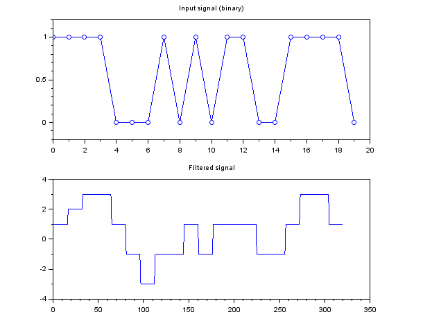

Description
Take as input a signal (already upsampled and constellation mapped), and apply a pulse shaping filter.
Example
// Gaussian filter, 16 samples/symbol, 3*16 taps FIR, B.T. = 0.5 osf = 16; ntaps = 3 * osf; BT = 0.5; psf = psfilter_init('g', osf, ntaps, BT); b = prbs(20); // Binary sequence to be encoded x = symmap(b,1,'b'); // NRZ encoding x = upsample(x, osf); [psf,y] = psfilter_process(psf,x); clf(); subplot(211); plot_binary(b); xtitle("Input signal (binary)"); subplot(212); plot(y); xtitle("Filtered signal"); |  |  |

Example with Gaussian shaping filter